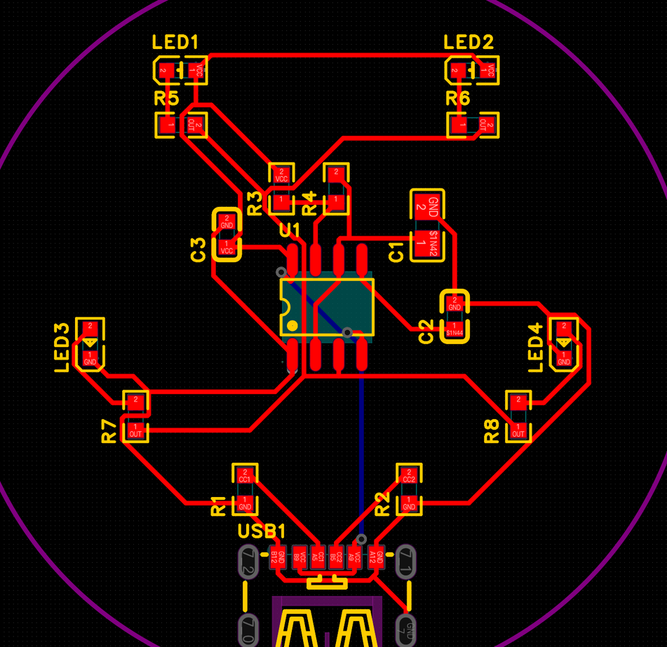

2.9 PCB 基础
一块 PCB 是由铜、基材、阻焊、丝印一层层叠起来的。这一节把每一层是什么、焊盘和过孔是什么、板厚铜厚怎么选、单面 / 双面 / 多层板有什么区别讲清楚。
一块双面板的“三明治”结构#
先复习一下 A-4.1 的层叠图。点每一层，看看它是什么、对应编辑器里的几号图层、导出成哪个 Gerber 文件：
| 层 | 材料 | 作用 | 能不能自己画 |
|---|---|---|---|
| 丝印 Silkscreen | 油墨（通常白色） | 文字、位号、Logo，给人看的 | 能，丝印层上随便写（A-8） |
| 阻焊 Solder Mask | 油墨（绿 / 蓝 / 黑 / 白 / 紫……） | 盖住铜线防氧化、防短路；焊盘处“开窗” | 一般不用画，封装自带开窗 |
| 铜层 Copper | 铜箔 | 导线、焊盘、铺铜——电流走的地方 | 能，布线、铺铜都画在这里 |
| 基材 Substrate | FR-4（玻璃纤维 + 环氧树脂） | 支撑、绝缘 | 不能，下单时选板材和板厚 |
焊盘 Pad#
焊盘是铜层上专门用来焊接元件引脚的铜块，阻焊在这里开窗把铜露出来。焊盘的形状、大小、间距由封装决定（2.5）：
- 贴片焊盘（SMD Pad）：只在顶层（或底层）一面，是一块平平的铜。0603 电阻的封装就是两个小长方形焊盘。
- 插件焊盘（THT Pad）：中间有一个穿透整块板子的孔，孔壁镀铜，上下两面都有一圈铜环。排针、直插元件用这种。在嘉立创EDA 里它属于「12 多层」，因为它同时存在于所有铜层。
过孔 Via#
过孔是连接不同铜层的小孔，孔壁镀了铜，导线在顶层走到这里，穿过去在底层接着走——像楼层之间的电梯。它和插件焊盘很像，区别是过孔不用来焊元件，通常很小，表面还盖着阻焊。

- 嘉立创EDA 默认过孔：外直径 0.61 mm、内直径（钻孔）0.305 mm（A-6.1 设计规则）。
- 普通双面板的过孔都是从顶层打穿到底层的通孔。多层板还有只打穿一部分层的盲孔、埋孔，工艺更复杂、更贵，新手用不到。
- 过孔本身有一点电阻和电感，大电流的线、高速信号线尽量少换层；铺铜时常在 GND 铜皮上打一些“缝合过孔”，把上下两层的 GND 连得更牢（案例 B 模组中间的 GND 散热焊盘就用了 4 个过孔连到底层 GND）。
板厚和铜厚#
| 参数 | 常见选择 | 说明 |
|---|---|---|
| 板厚 | 1.6 mm（默认）、1.2、1.0、0.8 mm…… | 1.6 mm 是行业最常用的厚度，结实、便宜。做可穿戴、要塞进薄外壳时可以选薄一点。Type-C 等插座对板厚有要求时看它的规格书 |
| 铜厚 | 1 oz（外层默认）、2 oz | oz（盎司）是指每平方英尺铜箔的重量，1 oz ≈ 35 µm（0.035 mm）厚。铜越厚能过的电流越大（2.10），也更贵 |
这两项都是下单时选的，编辑器里不用设置（A-10 下单页 PCB 工艺）。
单面板、双面板、多层板#
- 单面板：最便宜，但布线全挤在一面，线交叉时只能用跳线。现在打样价格差不多，很少专门做单面板。
- 双面板：两面走线，过孔换层，适合绝大多数简单项目。本教程的两个案例都是双面板，嘉立创 2 层板打样很便宜（案例 A 5 片约 ¥20）。
- 多层板（4、6、8 层……）：中间的铜层通常做成完整的 GND 平面和电源平面，信号走在外层。好处是抗干扰能力强、布线空间大，适合高速信号、复杂芯片（BGA）、射频。层数越多越贵。
编辑器里还有一些“不生产”的层#
PCB 编辑器的图层面板里有二三十个图层，但真正被做到板子上的只有铜、阻焊、丝印、板框和钻孔这几类。锡膏层用来做钢网（2.12）；文档层、飞线层、元件外形层等只是帮你看清楚设计，不会被生产出来。完整列表见 A-4.2 图层面板。
PCB 上什么东西负责把顶层和底层的导线连起来？
✅ 过孔是孔壁镀铜的小孔，像层与层之间的电梯。
“1 oz 铜厚”大约是多厚？
✅ 1 oz ≈ 35 µm = 0.035 mm，比一张纸还薄。
回到哪里继续#
- 正在认识图层：回到 A-4.2 编辑器里的图层面板。
- 正在布线：回到 A-6 布线。
- 继续：2.10 走线与间距。